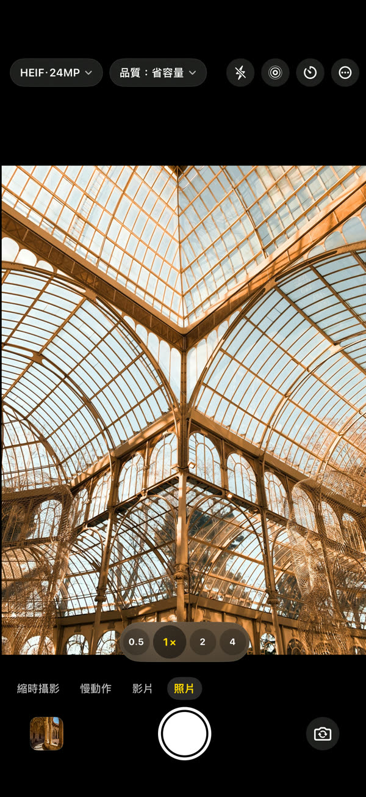
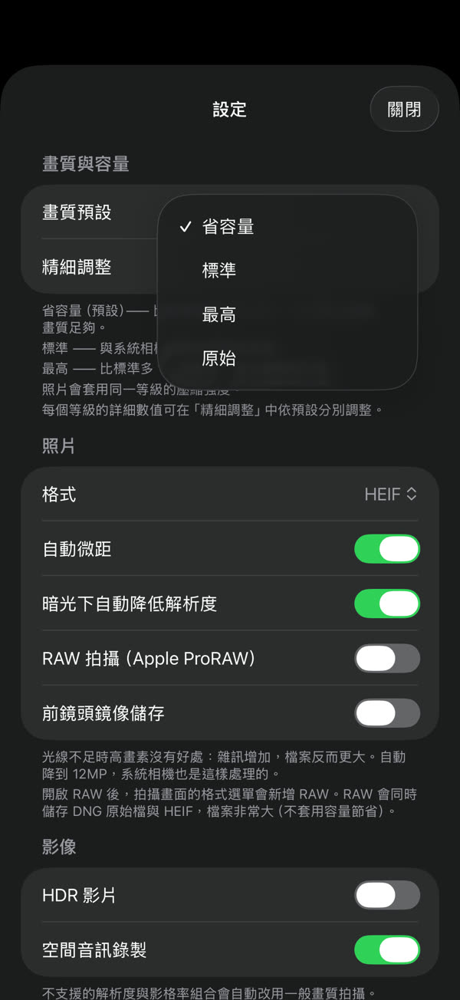
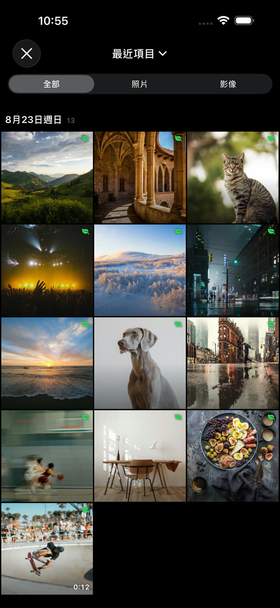
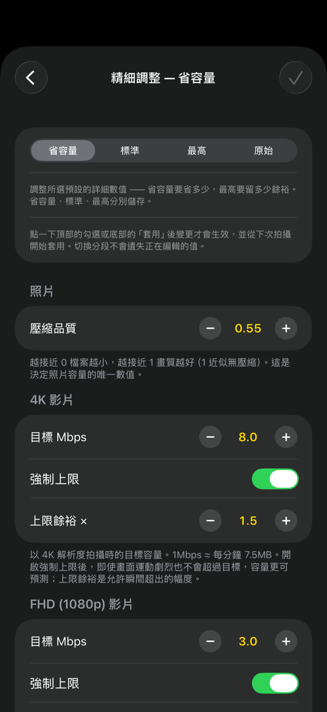
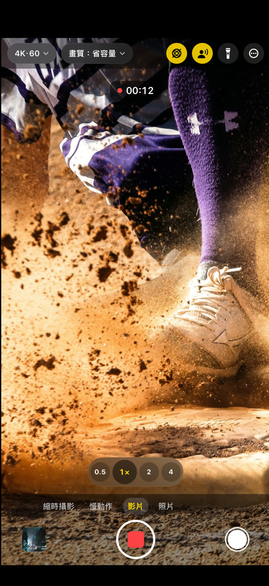

GramCamera
同樣的畫面，更小的檔案。
GramCamera 以與系統相機相同的方式拍攝，但在儲存時更省容量。在畫質沒有明顯下降的前提下縮小檔案，同樣的空間可以存得更久。
在 App Store 下載iOS 17 或更新版本 · iPhone 與 iPad

每次拍攝，空間少用約 60%。
照片3.7MB → 1.5MB約 60%
4K 影片每分鐘 169MB → 60MB64%
FHD 影片每分鐘 60MB → 23MB62%
選好、拍攝、查看省下多少。




需要的功能，一應俱全。
省多少由你決定
省容量、標準、最高三段。在精細調整中還能設定每個解析度的目標容量
直接存進「照片」
不另建圖庫。拍攝的照片和影片直接儲存到系統「照片」App
省了多少看得見
每一次拍攝都能看到與系統相機相比省下了多少
該有的都有
照片、影片、慢動作、縮時攝影，4K 60fps，HDR 影片，空間音訊，鏡頭切換與微距
只留在裝置上
拍攝內容只儲存在裝置和照片圖庫中。無需帳號，無需登入 — 隱私